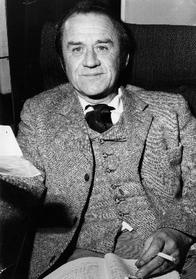

#3736 1984


 IMDB-Wertung: 7.2 / 10
IMDB-Wertung: 7.2 / 10  Tomatometer: 82
Tomatometer: 82  Metascore: 0
Metascore: 0 
Im totalitären Staat Ozeanien lebt der kleine Angestellte Winston Smith ein erbärmliches Leben unter den alles überwachenden Augen des regierenden Großen Bruders, dessen Kameras und Mikrofone jede Bewegung seiner Untertanen verfolgen. Tagsüber ist Winstons Smiths Aufgabe, im Ministerium für Wahrheit die Geschichte zu fälschen, indem er alte Nachrichtenmeldungen und Dokumente rückwirkend so ändert, dass sie der geänderten offiziellen Sichtweise des Staates entsprechen. Sein Leben nimmt eine verhängnisvolle Wendung als er eine verbotene Liebesaffäre beginnt. Er vergisst die alles überagende Maxime des Regimes: Big Brother is watching you!
Jahr: 1984
Dauer: 110 Minuten
FSK: 16
Land: England Studio: Senator FilmTonspuren:
Untertitel: Deutsch,
Auflösung: 1080p (1920x1040) Größe: 8949 MB
Genre: Thriller, Drama, Sci-Fi, Liebe
Regisseur: Michael Radford
Drehbuch: William Gibson
Soundtrack:
Darsteller:
 John Hurt als Winston Smith
John Hurt als Winston Smith Richard Burton als O'Brien
Richard Burton als O'Brien-  Cyril Cusack als Charrington
- Gregor Fisher als Parsons
 Roger Lloyd Pack als Waiter
Roger Lloyd Pack als Waiter- Garry Cooper als Guard
 Rolf Saxon als Patrolman
Rolf Saxon als Patrolman- Eddie Stacey als Executioner
- Phyllis Logan als The Telescreen Announcer
- Bob Flag als Big Brother
- Annie Lennox als Woman at rally , uncredited
- Lucien Morgan als Ministery Worker , uncredited
- Suzanna Hamilton als Julia
- James Walker als Syme
- Andrew Wilde als Tillotson
- David Trevena als Tillotson's Friend
- David Cann als Martin
- Anthony Benson als Jones
- Peter Frye als Rutherford
- Rupert Baderman als Winston Smith as a Boy
- Corinna Seddon als Winston's Mother
- Martha Parsey als Winston's Sister
- Merelina Kendall als Mrs. Parsons
- P.J. Nicholas als William Parsons
- Lynne Radford als Susan Parsons
- Pip Donaghy als Inner Party Speaker
- Shirley Stelfox als The Whore
- Janet Key als The Instructress
- Hugh Walters als Artsem Lecturer
- John Hughes als Man in White Coat
- Robert Putt als Shouting Prole
- Christine Hargreaves als Soup Lady
- Matthew Scurfield als Guard
- John Golightly als Patrolman
- Ole Oldendorp als Eurasian Soldier
- Norman Bacon als Man on Station Platform
- John Foss als Youth Leader
- Carey Wilson als Party Member
- Mitzi McKenzie als Party Member
- Pam Gems als The Washerwoman
- Joscik Barbarossa als Aaronson
- John Boswall als Goldstein
- Keith Gale als Prole , uncredited
- Michael Munn als Interrogation Room Soldier , uncredited
 Fred Wood als Prol , uncredited
Fred Wood als Prol , uncredited
Datei: X:\1984\1984 (1984, FSK16, 1920x1040).mkv seit 30.05.2016
Festplatte: HD 1980-1986
 Es gibt insgesamt 46 Filme in der Gruppe '1984'
Es gibt insgesamt 46 Filme in der Gruppe '1984'